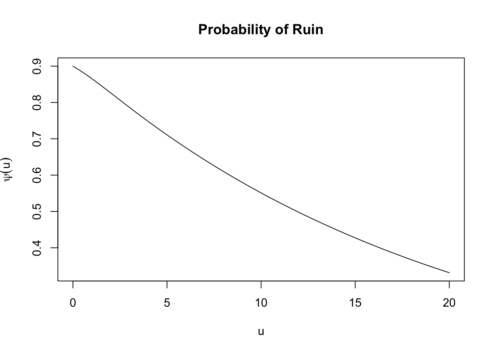

4 R for Insurance
4.1 The collective risk model
Let \(S\) be a random variable representing the aggregate claim amount (or the total amount of claims) of an insurance portfolio of independent risks over a fixed period. Let \(N\) be a random variable representing the number of claims (or frequency) in the portfolio over that period, and \(X_1, X_2, \dots\) be a sequence of iid random variables denoting the claim sizes (or severities), with common element \(X\geq0\). Then, \(S\) is given as the random sum \[\begin{equation*} S=\left\{\begin{array}{ll} X_1+X_2+\cdots+X_N\,, & N>0 \,, \\ 0\,, & N=0 \,. \end{array}\right. \end{equation*}\] In order to derive several properties of the model above, the collective risk model assumes that the number of claims and the claim sizes are independent, that is, \(N\) and \(X_1, X_2, \dots\) are mutually independent.
In the following, the probability mass function (pf) of \(N\) is denoted by \(p_n=\mathbb{P}(N=n)\), and the probability density function (pdf) and cumulative distribution function (cdf) of \(X\) are denoted by \(f_X(x)\) and \(F_X(x)=\mathbb{P}(X\leq x)\), respectively.
We now present some properties of the aggregate loss \(S\). We start with the moment generating function (mgf) \(M_S(t)\), which is given by \[ M_S(t)=\mathbb{E}[\exp(tS)]=M_N\left(\ln M_X(t)\right) \,, \] where \(M_N(t)\) and \(M_X(t)\) are the mgf’s of \(N\) and \(X\), respectively.
Next, the mean and variance of \(S\) are \[ \mathbb{E}[S]=\mathbb{E}[X]\mathbb{E}[N] \,, \] and \[ \text{Var}(S)=\mathbb{E}[N]\text{Var}(X)+\text{Var}(N)\mathbb{E}^2[X] \,. \] Finally, the distribution function \(F_S\) of \(S\) is given by \[\begin{equation} F_S(x)=\mathbb{P}(S\leq x)=\sum_{n=0}^{\infty}p_nF^{\star n}_X(x)\,,\quad x\geq 0 \,, \tag{4.1} \end{equation}\] where \(F^{\star n}_X\) is the cdf of the \(n\)-fold convolution of the r.v. \(X\) defined as \[\begin{equation*} F^{\star n}_X(x) =\left\{\begin{array}{ll} 1_{(x\geq 0)}\,, & n = 0\,, \\ \mathbb{P}(X_1+X_2+\cdots+X_n\leq x)\,, & n = 1,2,\dots \,, \end{array}\right. \end{equation*}\] and \(1_{A}\) denotes the indicator function over a set \(A\).
When \(X\) is continuous, differentiating \(F_S\) with respect to \(x\) yields the following expression for the density function \(f_S\) of \(S\) \[ f_S(x) = \sum_{n=0}^{\infty}p_nf^{\star n}_X(x)\,, \quad x \geq 0 \,, \] where \(f^{\star n}_X\) is the pdf of the \(n\)-fold convolution of the random variable \(X\). An analogous expression for the pf of \(S\) can be obtained in the case of \(X\) discrete.
Both the cdf and the pf (pdf) of the \(n\)-fold convolution of \(X\) can be obtained recursively as given in the following proposition.
Proposition 4.1 \(\,\)
If \(X\) is a discrete random variable, then the cdf of the \(n\)-fold convolution of \(X\) can be evaluated recursively by the following formula \[\begin{equation} F^{\star n}_X(x)=\left\{\begin{array}{ll} 1_{(x\geq 0)}\,, & n=0 \,,\\ F_X(x)\,, & n=1 \,,\\ \sum_{y=0}^{x}f_X(y)F^{\star (n-1)}_X(x-y), & n=2,3,\ldots \,, \end{array}\right. \tag{4.2} \end{equation}\] while the pf of the \(n\)-fold convolution of \(X\) can be evaluated recursively by \[\begin{equation*} f^{\star n}_X(x)=\sum_{y=0}^{x}f_X(y)f^{\star (n-1)}_X(x-y) \,. \end{equation*}\]
If \(X\) is a continuous random variable, then the cdf of the \(n\)-fold convolution of \(X\) can be evaluated recursively by the following formula \[\begin{equation*} F^{\star n}_X(x)=\int_{0}^{x}f_X(y)F^{\star (n-1)}_X(x-y)dy \,, \end{equation*}\] while the pdf of the \(n\)-fold convolution of \(X\) can be evaluated recursively by \[\begin{equation*} f^{\star n}_X(x)=\int_{0}^{x}f_X(y)f^{\star (n-1)}_X(x-y)dy \,. \end{equation*}\]
4.1.1 Discretization of claim amount distributions
Some numerical techniques to compute the aggregate claim amount distribution require a discrete arithmetic claim amount distribution, that is, a distribution defined on \(0, h, 2h, \dots\) for some step (or span, or lag) \(h\). The actuar package provides the function discretize() to discretize continuous distributions. More specifically, given \(F(x)\), the cdf of the distribution to discretize on some interval \((a, b)\), the discretize() function supports the following four discretization methods (we denote by \(f_x\) the pf at \(x\) of the discretized distribution).
Upper discretization, or forward difference of \(F(x)\): \[ f_x =F(x+h)-F(x) \,, \quad x=a,a+h,\ldots,b-h\,. \] The discretized cdf is always above the true cdf.
Lower discretization, or backward difference of \(F(x)\): \[\begin{align*} f_x = \left\{ \begin{array}{ll} F(a)\,, & x=a \,,\\ F(x)-F(x-h)\,, & x=a+h,\dots,b \,. \end{array} \right. \end{align*}\] The discretized cdf is always under the true cdf.
Rounding of the random variable, or the midpoint method: \[\begin{align*} f_x=\left\{ \begin{array}{ll} F(a+h/2)\,, & x=a \,, \\ F(x+h/2)-F(x-h/2)\,, & x=a+h,\dots,b-h \,. \end{array} \right. \end{align*}\] The true cdf passes exactly midway through the steps of the discretized cdf.
Unbiased, or local matching of the first moment method: \[\begin{align*} f_x=\left\{ \begin{array}{ll} \frac{E[X\wedge a]-E[X\wedge a +h]}{h}+1-F(a)\,, & x=a \,,\\ \frac{2E[X\wedge x]-E[X\wedge x -h]-E[X\wedge x +h]}{h}\,, & a<x<b \,,\\ \frac{E[X\wedge b]-E[X\wedge b-h]}{h}-1+F(b)\,, & x=b\,, \end{array} \right. \end{align*}\] where \(c\wedge d\) denotes \(\min(c,d)\). The discretized and the true distributions have the same total probability and expected value on \((a, b)\).
Example 4.1 Find the four discretizations of a \(Gamma(2,1)\) distribution on \((0,10)\) with a step of \(0.5\) and plot their cdf against the original cdf.
Solution. \(\,\)
library(actuar)
fx_upper <- discretize(pgamma(x, 2, 1),
method = "upper",
from = 0,
to = 10,
step = 0.5
)
x <- seq(0, 10 - 0.5, 0.5)
plot(stepfun(x, diffinv(fx_upper)), pch = 19, col = "blue", main = "Upper")
lines(x, pgamma(x, 2, 1))fx_lower <- discretize(pgamma(x, 2, 1),
method = "lower",
from = 0,
to = 10,
step = 0.5
)
x <- seq(0, 10, 0.5)
plot(stepfun(x, diffinv(fx_lower)), pch = 19, col = "blue", main = "Lower")
lines(x, pgamma(x, 2, 1))fx_round <- discretize(pgamma(x, 2, 1),
method = "rounding",
from = 0,
to = 10,
step = 0.5
)
x <- seq(0, 10 - 0.5, 0.5)
plot(stepfun(x, diffinv(fx_round)), pch = 19, col = "blue", main = "Rounding")
lines(x, pgamma(x, 2, 1))fx_unbi <- discretize(pgamma(x, 2, 1),
method = "unbiased",
from = 0,
to = 10,
step = 0.5,
lev = levgamma(x, 2, 1) # Computes E[min(X, a)]
)
x <- seq(0, 10, 0.5)
plot(stepfun(x, diffinv(fx_unbi)), pch = 19, col = "blue", main = "Unbiased")
lines(x, pgamma(x, 2, 1))4.1.2 Calculation of the aggregate claim amount distribution
In this section, we present various methods to compute or approximate the cdf of the aggregate claims amount \(S\). These methods are implemented in the actuar package through the function aggregateDist().
Panjer’s recursion
The first method that we present is the well-known Panjer’s recursion. This method requires the severity distribution to be discrete arithmetic on \(0, 1, 2, \dots, m\) for some monetary unit and the frequency distribution to be in the \((a,b,0)\) or \((a,b,1)\) class of distributions. Recall that \(N\) is in the \((a,b,0)\) class (resp. in the \((a,b,1)\) class) if its pf \(p_n\) can be written recursively in the following form \[\begin{equation*} p_n=\left(a+\frac{b}{n}\right)p_{n-1}, \quad n=1,2,3,\dots\,, \end{equation*}\] resp. \[\begin{equation*} p_n=\left(a+\frac{b}{n}\right)p_{n-1}, \quad n=2,3,\dots\,. \end{equation*}\] Many known distributions belong to the \((a,b,0)\) and \((a,b,1)\) classes. For instance, Table 4.1 shows the most important examples in the \((a,b,0)\) class.
| Distribution of \(N\) | Paremeters | \(a\) | \(b\) | \(p_0\) |
|---|---|---|---|---|
| Poisson | \(\lambda > 0\) | \(0\) | \(\lambda\) | \(\exp(-\lambda)\) |
| Binomial | \(n \in \mathbb{N}\), \(p \in (0,1)\) | \(-p/(1 - p)\) | \((n+1)p / (1 - p)\) | \(0\) |
| Geometric | \(p \in (0,1)\) | \(1 - p\) | \(0\) | \(p\) |
| Negative Binomial | \(r \in \mathbb{N}\) , \(p \in (0,1)\) | \(1 - p\) | \((r-1)(1 - p)\) | \(p^r\) |
Under the above setting, the pf of the aggregate claims can be calculated recursively based on the following theorem.
Theorem 4.1 Let \(N\) be a random variable in the \((a,b,0)\) (resp. \((a,b,1)\)) family of distributions. Then, the pf \(f_S\) of the aggregate claims is given by \[\begin{equation*} f_S(x) = \left\{\begin{array}{ll} P_N(f_X(0))\,, & x=0 \,, \\ \frac{1}{1-af_X(0)}\sum_{y=1}^{x\wedge m}\left(a+\frac{by}{x}\right)f_X(y)f_S(x-y)\,,& x=1,2,\dots \,, \end{array}\right. \end{equation*}\] resp. \[\begin{equation*} f_S(x) = \left\{\begin{array}{ll} P_N(f_X(0)) \,, & x=0 \\ \frac{1}{1-af_X(0)} \left( (p_1-(a+b)p_0)f_X(x)+\sum_{y=1}^{x \wedge m}\left(a+\frac{by}{x}\right)f_X(y)f_S(x-y) \right)\,, & x=1,2,\dots \,, \end{array}\right. \end{equation*}\] where \(P_N(t)=\mathbb{E}(t^N)\) is the probability generating function (pgf) of \(N\).
To perform Panjer’s recursion in R, we can use the function aggregateDist() with argument method = "recursive". Let us give a concrete example. We consider \(S\) such that \(N\) is Poisson distributed with mean \(10\) and \(X \sim Gamma(2, 1)\). Then, we approximate the cdf of \(S\) by first discretizing the gamma distribution on (0, 22) with the unbiased method and a step of 0.5 and then using the recursive method in aggregateDist().
fx <- discretize(pgamma(x, 2, 1),
method = "unbiased",
from = 0, to = 22, step = 0.5,
lev = levgamma(x, 2, 1)
)
Fs <- aggregateDist("recursive",
model.freq = "poisson",
model.sev = fx, lambda = 10,
x.scale = 0.5
)
Fs##
## Aggregate Claim Amount Distribution
## Recursive method approximation
##
## Call:
## aggregateDist(method = "recursive", model.freq = "poisson", model.sev = fx,
## x.scale = 0.5, lambda = 10)
##
## Data: ( 143 obs. )
## x[1:143] = 0, 0.5, 1, ..., 70.5, 71The above code returns an object of the class aggregateDist from which we can obtain information regarding \(S\). Firstly, we can use directly such an object to evaluate the cdf of \(S\):
Fs(20)## [1] 0.5470771Note that the support can be obtained with the knots() function:
head(knots(Fs))## [1] 0.0 0.5 1.0 1.5 2.0 2.5Moreover, we can apply other functions to the above object to obtain different quantities or even plots. For instance, summary() provides some basic information on \(S\).
summary(Fs)## Aggregate Claim Amount Empirical CDF:
## Min. 1st Qu. Median Mean 3rd Qu. Max.
## 0.00000 14.50000 19.50000 19.99994 25.00000 71.00000To plot the approximated cdf of \(S\), we can use the plot() function:
plot(Fs, do.points = FALSE, verticals = TRUE)We will illustrate additional useful functions with the other approximation method presented next.
Exact calculation by numerical convolutions
This method consists of using directly (4.1), and it can be accessed using the argument method = "convolution" in the aggregateDist() function. However, it only works with discrete severity models and computes the distribution of the convolution using (4.2). This method is computationally demanding, and hence, it only works well with relatively small problems. Nevertheless, an advantage is that any discrete distribution can be employed for the claim number. We now present a concrete example: As before, we consider a \(Gamma(2,1)\) distribution for the severities, but now consider a \(Bin(10, 0.4)\) distribution for the number of claims.
fx <- discretize(pgamma(x, 2, 1),
method = "unbiased",
from = 0, to = 22, step = 0.5,
lev = levgamma(x, 2, 1)
)
fn <- dbinom(0:10, 10, 0.4) # We require a vector of claim number probabilities
Fs <- aggregateDist("convolution",
model.freq = fn,
model.sev = fx,
x.scale = 0.5
)
Fs(10)## [1] 0.7282019Once the object above was created, we can again find different quantities of interest. For instance, the density can be found using the diff() function:
fs <- diff(Fs)
head(fs)## [1] 0.007499618 0.006946915 0.011704075 0.016188003 0.020890637 0.025716230Normal approximation
Using the CLT, the cdf of \(S\) can be approximated as
\[
F_S(x) \approx \Phi\left( \frac{x - \mu_S}{\sigma_S} \right) \,,
\]
where \(\mu_S = \mathbb{E}[S]\), \(\sigma^2_S = \text{Var}(S)\), and \(\Phi\) denotes the cdf of a standard normal. However, this approximation ignores the tail behavior of the distribution, which may be problematic when we are interested in the tails. Moreover, we require the existence of at least the second moment. To use this method in the aggregateDist() function, we need to pass the argument method = "normal" and a vector with the moments of \(S\) in the order \((\mu_S , \sigma^2_S)\). For instance,
Fs <- aggregateDist("normal", moments = c(6, 2))
Fs(5)## [1] 0.2397501Note that the above cdf evaluation can also be computed simply as
pnorm(5, mean = 6, sd = sqrt(2))## [1] 0.2397501Normal Power II approximation
This method approximates the cdf of \(S\) by
\[
F_S(x) \approx \Phi\left( - \frac{3}{\gamma_S} + \sqrt{\frac{9}{\gamma_S^2} + 1 + \frac{6}{\gamma_S} \frac{x - \mu_S}{\sigma_S} } \right) \,,
\]
where \(\gamma_S = \mathbb{E}[(S - \mu_S)^3]/ \sigma^{3}_S\). The approximation is valid for \(x > \mu_S\) only
and performs reasonably well when \(\gamma_S < 1\). This method is implemented in the aggregateDist() function and accessible through the argument method = "npower". We require to give a vector with \((\mu_S , \sigma^2_S, \gamma_S)\), in that order. For example,
Fs <- aggregateDist("npower", moments = c(6, 2, 0.5))
Fs(7) # Accesible only for x > mu_S## [1] 0.7716457Simulation
The last method we introduce here consists of simulating a sample from \(S\) and then approximating \(F_S\) by the empirical cdf
\[
F_n(x) = \frac{1}{n}\sum_{j = 1}^n 1_{(x_j \leq x)} \,.
\]
The above can be performed using the aggregateDist() function with the argument method = "simulation". For instance, for \(S\) with \(N\) Poisson distributed with mean \(10\) and \(X \sim Gamma(2,1)\), we have
set.seed(1)
model_freq <- expression(data = rpois(10))
model_sev <- expression(data = rgamma(2, 1))
Fs <- aggregateDist("simulation",
nb.simul = 2500,
model_freq, model_sev
)We can then compute different quantities related to \(S\). For instance, the mean and quantiles can be computed using the mean() and quantile() functions:
mean(Fs)## [1] 20.13251quantile(Fs)## 25% 50% 75% 90% 95% 97.5% 99% 99.5%
## 14.38965 19.37523 25.25919 30.98962 33.85464 36.24842 39.92677 43.65289Other relevant quantities in insurance applications are the Value at Risk (VaR) and the Conditional Tail Expectation. Recall that the VaR of level \(\alpha \in (0,1)\), \(VaR_\alpha\), is the quantity satisfying
\[ \mathbb{P}(S \leq VaR_\alpha ) = \alpha \,, \] and that the conditional tail expectation of level \(\alpha\), \(CTE_\alpha\), is given by \[ CTE_\alpha = \mathbb{E}[S \mid S> VaR_\alpha ] \,. \]
The above quantities can be computed easily using the VaR() and CTE() functions in the actuar package.
VaR(Fs)## 90% 95% 99%
## 30.98962 33.85464 39.92677CTE(Fs)## 90% 95% 99%
## 34.84512 37.52703 44.26966In fact, aggregateDist() implicitly calls the function simul() to perform the simulation. We can use the later directly as follows:
sim_s <- simul(2500,
model.freq = expression(rpois(10)),
model.sev = expression(rgamma(2, 1))
)This creates an object containing the severities, frequencies, and aggregate claim amounts. The latter, representing \(S\), can be obtained using the aggreate() function.
s_sample <- aggregate(sim_s)
summary(s_sample[1, -1])## Min. 1st Qu. Median Mean 3rd Qu. Max.
## 0.00 14.45 19.03 19.87 24.65 52.91hist(s_sample[1, -1], freq = F, breaks = 20, main = "Simulation of S", xlab = "x")Alternatively, the simulation of \(S\) can be performed with the following code:
s_sim <- function(n, distr, ...) {
sum(distr(n, ...))
}
set.seed(1)
N <- rpois(2500, 10)
s_sample <- sapply(N, s_sim, distr = rgamma, shape = 2, rate = 1)
summary(s_sample)## Min. 1st Qu. Median Mean 3rd Qu. Max.
## 0.8999 14.3967 19.3932 20.1325 25.2531 51.6455hist(s_sample, freq = F, breaks = 20, main = "Simulation of S", xlab = "x")4.2 Ruin theory
In the previous section, we modeled the total claims over a fixed period in an insurance portfolio. In this section, we are interested in describing the evolution of the insurance company’s surplus over many periods. In particular, we want to find the probability that the surplus becomes negative, in other words, the probability that the ruin of the insurance company occurs. Finding this ruin probability is the main topic of ruin theory.
4.2.1 The surplus process
In classical ruin theory, an insurer’s surplus at a fixed time \(t>0\) is determined by three quantities: the amount of the surplus at time \(t = 0\) (also called initial surplus), the amount of premium income received up to time \(t\), and the amount paid out in claims up to time \(t\). More specifically, let \(U(t)\) denote the surplus of an insurance company at time \(t\), \(c(t)\) denote the premium received up to time \(t\), and \(S(t)\) denote the aggregate claims paid up to time \(t\). If \(u\) is the initial surplus at time \(t = 0\), then \(U(t)\) is given by
\[ U(t) = u + c(t) - S(t) \,. \] As previously mentioned, the ruin of the insurance company occurs when the surplus becomes negative. Thus, the probability of ruin in infinite time is defined as \[ \psi(u) = \mathbb{P}(U(t) <0 \,\, \text{for some} \,\, t\geq0) \,. \] We now make further assumptions in the surplus process that will allow us to compute (or approximate) the ruin probability. First, we assume that the premium income is continuous over time and that the premium income in any time interval is proportional to the interval length. More specifically, \(c(t)\) is given by \[ c(t) = ct \,, \] where \(c >0\) is a constant rate. Next, we assume that the total amount claimed at time \(t\geq0\), \(S(t)\), is of the form \[ S(t) = \sum_{j = 1}^{N(t)} X_j \,, \]
where \(N(t)\) denotes the number of claims up to time \(t\) and \(X_j\) denotes the amount of claim \(j\). Note that we follow the convention that \(S(t) = 0\) if \(N(t) = 0\). Furthermore, we assume that \(X_1, X_2, \dots\) are iid random variables, which are also independent of \(N(t)\). We now require a specification for the claim number process \(N(t)\). We start by recalling the definition of a counting process.
Definition 4.1 A stochastic process \(\{N(t)\}_{t\geq 0}\) is called a counting process if it satisfies the following properties:
- \(N(0)=0\).
- If \(s\leq t\) then \(N(s)\leq N(t)\).
- \(N(t)\in \mathbb{N}\) for all \(t>0\).
Intuitively, a counting process \(N(t)\) counts the number of events that appear in the time interval \((0,t]\). In what follows we denote by \(T_1, T_2, \dots\) the jump times of \(N(t)\), that is, \(T_k = \inf\{t\geq0 : N(t) \geq k\}\) for all \(k \in \mathbb{N}\).
In classical ruin theory, it is common to assume that \(\{N(t)\}_{t\geq 0}\) is a Poisson process. In fact, in such a case, the model is often referred to as the Cramer-Lundberg model or classical risk model. We now present the definition of the Poisson process.
Definition 4.2 A counting process \(\{N(t)\}_{t\geq 0}\) is called a Poisson process with rate \(\lambda > 0\) if:
- \(\{N(t)\}\) has stationary and independent increments.
- \(\mathbb{P}(N(h) = 0) = 1 - \lambda h + o(h)\) as \(h \to 0\).
- \(\mathbb{P}(N(h) = 1) = \lambda h + o(h)\) as \(h \to 0\).
We now give some alternative definitions of the Poisson process.
Proposition 4.2 Let \(\{N(t)\}_{t\geq 0}\) be a counting process. The following are equivalent:
- \(\{N(t)\}\) is a Poisson process with rate \(\lambda > 0\).
- \(\{N(t)\}\) has independent increments and \(N(t) \sim Pois(\lambda t)\) for all \(t\geq0\).
- The interarrival times \(\{ T_k - T_{k-1} : k \geq 1 \}\) are independent and exponentially distributed with mean \(1/\lambda\).
In what follows, we denote the interarrival times by \(W_k = T_k - T_{k-1}\). Note that, in particular, iii. implies that a Poisson process is a particular case of a renewal process.
Definition 4.3 A counting process \(\{N(t)\}_{t\geq 0}\) is called an ordinary renewal process if its interarrival times \(\{ W_k : k \geq 1 \}\) are iid.
When \(\{N(t)\}_{t\geq 0}\) is a renewal process, the model is called renewal risk model or Sparre Andersen model.
To study the ruin probability \(\psi(u)\), we require further assumptions regarding the premium rate \(c>0\). First, one can show that
\[ \psi(u) = 1 \quad \iff \mathbb{E}[c W - X ] < 0 \,. \]
Thus, in order to avoid ruin with probability one, we assume that \[ c > \mathbb{E}[X ] / \mathbb{E}[W] \,, \]
which is known as the net profit condition. Note that in the classical risk model (i.e., \(W\sim Exp(\lambda)\)), the net profit condition reads as \[ c > \lambda \mathbb{E}[X ] \,, \] which implies that \[ ct > \mathbb{E}[S(t) ] \,, \] that is, the premium income is above the expected value of aggregated losses for any time \(t\geq0\). In such a case, \(c\) is typically described in terms of a security loading \(\theta\geq0\) such that
\[ c = (1 + \theta )\lambda \mathbb{E}[X ] \,. \]
Finally, one can show that under the net profit condition \[ \psi(u) \to 0 \quad \text{as} \quad u \to \infty \,. \]
In what follows, we assume that the net profit condition is satisfied.
4.2.2 The adjustment coefficient
The quantity known as the adjustment coefficient is a valuable tool in risk theory that allows us to find a bound for the ruin probability. More specifically, the adjustment coefficient \(R\) is defined as the smallest strictly positive solution (if it exists) to the Lundberg equation
\[ h(t) = \mathbb{E} \left[\exp(tX - tcW) \right] = 1 \,, \] where \(c>0\) satisfies the net profit condition. Under the assumption of independence between \(X\) and \(W\), as in the most common models, the equation can be rewritten as
\[ h(t) = M_X(t) M_W(-tc) = 1 \,. \]
In general, it is not possible to explicitly solve the above equation for \(R\). Usually, one must resort to numerical methods, many of which require an initial guess about the value of \(R\). An upper bound of the adjustment coefficient in the classical risk model (there are many) is given by \[ R\leq \frac{2(c-\lambda\mathbb{E}[X])}{\lambda\mathbb{E}[X^2]}=\frac{2\theta\mathbb{E}[X]}{\mathbb{E}[X^2]}\,. \]
In R, we can use the adjCoef() function from the actuar package to compute the adjustment coefficient. We require the following arguments: the two moment generating functions \(M_X(t)\) and \(M_W(t)\) (thereby assuming independence), the premium rate \(c\), and the upper bound of the support of \(M_X(t)\) or any other upper bound for \(R\). For example, if \(W\sim Exp(2)\), \(X \sim Exp(1)\) and the premium rate is \(c = 2.4\), then the adjustment coefficient is
adjCoef(
mgf.claim = mgfexp(x), mgf.wait = mgfexp(x, 2),
premium.rate = 2.4, upper.bound = 1
)## [1] 0.1666667In the above solution, we passed the upper bound for the support of \(M_X(t)\). However, since we are in the classical risk model setup, we could have also used the upper bound of \(R\) described previously
exp_aux <- function(x) {
x * dexp(x, 1)
}
snd_aux <- function(x) {
x^2 * dexp(x, 1)
}
exp_x <- integrate(exp_aux, 0, Inf)$value
exp_x## [1] 1snd_x <- integrate(snd_aux, 0, Inf)$value
snd_x## [1] 2c <- 2.4
lambda <- 2
bound <- 2 * (c - lambda * exp_x) / (lambda * snd_x)
bound## [1] 0.2R <- adjCoef(
mgf.claim = mgfexp(x), mgf.wait = mgfexp(x, 2),
premium.rate = 2.4, upper.bound = bound
)
R## [1] 0.1666667As previously mentioned, knowledge of the adjustment coefficient allows computing a bound for the ruin probability, as described in the following result.
Theorem 4.2 (Lundberg's inequality) For \(u\geq 0\), the ruin probability, \(\psi(u)\), has an exponential upper bound, given by \[ \psi(u)\leq \exp(-Ru) \,, \] where \(R\) is the adjustment coefficient.
In our last example, we can then compute a bound for the ruin probability as (assuming \(u = 3\))
u <- 3
exp(-R * u)## [1] 0.60653074.2.3 Probability of ruin
Explicit calculation of the infinite time probability of ruin is a difficult task except for the most simple models. For example, if the interarrival times \(W\) are \(Exp(\lambda)\) distributed (i.e., the claim numbers are described using a Poisson process) and the claim amounts \(X\) are \(Exp(\beta)\) distributed, then
\[
\psi(u) = \frac{\lambda}{c \beta} \exp((\beta - \lambda / c)u) \,, \quad u \geq0 \,.
\]
In the model above, although the frequency assumption can be justified, the severity assumption can hardly be used to describe real-life problems making the model mainly an illustration tool. Fortunately, other generalizations of the exponential distribution, such as mixtures of exponentials and Erlang (and, more generally, phase-type distributions), also allow for a closed-form solution for the ruin probability. The function ruin() of the actuar package allows computing the ruin probability for such cases. First, one needs to specify the claim amount and interarrival times models with any combination of “exponential”, “Erlang” (and “phase-type”). Then, one passes the parameters of each model using lists with components named after the corresponding parameters of dexp, dgamma (and dphtype). If an argument weights is provided, the model is a mixture of exponential or Erlang. Let us illustrate first an exponential/exponential model with premium rate \(c = 1\) (default):
psi <- ruin(
claims = "e", par.claims = list(rate = 5),
wait = "e", par.wait = list(rate = 3)
)
psi(0:10) # Evaluates the ruin probability for initial surplus from 0 to 10.## [1] 6.000000e-01 8.120117e-02 1.098938e-02 1.487251e-03 2.012776e-04
## [6] 2.723996e-05 3.686527e-06 4.989172e-07 6.752110e-08 9.137988e-09
## [11] 1.236692e-09Next, we consider a model with a mixture of two exponentials for the claim amounts, exponential interarrival times, and premium rate \(c = 1.5\).
psi <- ruin(
claims = "e", par.claims = list(rate = c(3, 7), w = c(0.4, 0.6)),
wait = "e", par.wait = list(rate = 3),
pre = 1.5
)
psi(0:10)## [1] 4.380952e-01 5.310603e-02 7.529333e-03 1.070525e-03 1.522149e-04
## [6] 2.164303e-05 3.077365e-06 4.375623e-07 6.221582e-08 8.846302e-09
## [11] 1.257832e-09Moreover, we can plot the ruin probability straightforwardly as a function of the initial surplus using the plot() function as follows:
plot(psi, from = 0, to = 10)Finally, we consider a model with Erlang claim amounts and exponentials interarrival times:
psi <- ruin(
claims = "E", par.claims = list(shape = 3, rate = 1),
wait = "e", par.wait = list(rate = 3),
pre = 10
)
plot(psi, from = 0, to = 20)
4.2.4 Reinsurance
Reinsurance means that the company (the cedent) insures a part of the risk at another insurance company (the reinsurer). In this subsection, we study how different types of reinsurance can affect the adjustment coefficient and the probability of ruin. In what follows, we consider the classical risk model unless it states otherwise.
Let \(X\) (\(\geq 0\)) denote the claim amount under a reinsurance-free environment. A reinsurance arrangement is then defined in terms of a function \(h(x)\) with the property \(0\leq h(x)\leq x\). Here \(h(x)\) is the amount of the claim \(x\) to be paid by the cedent, and \(x - h(x)\) is the amount to be paid by the reinsurer. The most common examples are the following two:
- Proportional reinsurance. \(h(x) = ax\) for some \(a \in [0, 1]\). Also called quota share reinsurance.
- Excess-of-loss reinsurance. \(h(x) = \min(x, m)\) for some \(m \in (0, \infty)\), referred to as the retention limit.
Next, assume that in a reinsurance-free setting, there is a security loading \(\theta\geq0\), such that the premium rate is \[ (1+\theta)\lambda \mathbb{E}(X) \,. \] If we assume that under the reinsurance agreement \(h\), the reinsurer receives a premium rate determined by a security loading \(\theta_h \geq0\), that is, \[ (1+\theta_h)\lambda\mathbb{E}\bigl(X-h(X)\bigr) \,. \] Then, the premium rate \(c^*\) for the cedent is \[ c^*=(1+\theta)\lambda \mathbb{E}[X]-(1+\theta_h)\lambda\mathbb{E}[X-h(X)] \,. \]
Furthermore, we require \[ c^*>\lambda\mathbb{E}\bigl[h(X)\bigr] \,, \] which plays the role of our new net profit condition. Thus, the surplus process of the cedent, \(\{U^*(t)\}_{t\geq 0}\), is given by
\[ U^*(t)=u+c^*t-\sum_{j=1}^{N(t)}h(X_j) \,,\quad t\geq 0 \,. \]
Now, let \(R_h\) denote the adjustment coefficient under the \(h\) reinsurance agreement, meaning that \(R_h\) is the unique positive solution to the equation \[ 1= M_{h(X)}(t) M_W(-c^* t)\,, \] provided that \(M_{h(X)}(t)=\mathbb{E}[\exp(t h(X))]\), exists.
Thus, the insurer’s ultimate ruin probability upper bound is given by \[ \psi_{*}(u)\leq \exp(-R_h u)\,, \quad u\geq 0 \,, \] where \(\psi_{*}\) is the probability of ruin corresponding to the surplus process \(\{U^*(t)\}_{t\geq 0}\).
We now study in more detail the proportional and excess-of-loss reinsurance agreements, which are implemented in the actuar package.
Proportional reinsurance
Under proportional reinsurance, \(h\) is given by \[ h(X)=aX \,, \qquad 0\leq a\leq 1\,. \] Thus, the relative security loading \(\theta_h\) satisfies the equation \[ c^*=\Bigl((1+\theta)-(1+\theta_h)(1-a)\Bigr)\lambda \mathbb{E}[X] \,. \]
It follows from the above equation and the net profit condition that \[ a>1-\frac{\theta}{\theta_h} \,. \] In other words, the insurer must retain at least the proportion \(1-{\theta}/{\theta_h}\) to avoid ultimate ruin with probability one.
In this case, the adjustment coefficient \(R_h\) satisfies the equation
\[
1=M_{aX}(t) M_W(-c^* t) = M_{X}(at) M_W(-c^* t) \,.
\]
Moreover, an upper bound of the adjustment coefficient is given by: \[ R_h\leq \frac{2(c^*-a\lambda\mathbb{E}[X])}{\lambda a^2\mathbb{E}[X^2]} \,, \]
We now provide an example, which can be solved using the adjCoef() function.
Example 4.2 Consider the following classical risk model under proportional reinsurance: The claim amounts are exponentially distributed with mean \(1\), the Poisson rate is \(\lambda=2\), and the safety loadings are \(\theta=0.2\) and \(\theta_h=0.3\).
- Find the adjustment coefficient \(R_h\) if \(a=0.75, 0.8, 0.9, 1\).
- Plot the adjustment coefficient as a function of the proportion \(a\).
- Find an upper bound for the ruin probability if \(a = 0.5\) and \(u = 2\).
Solution. \(\,\)
lambda <- 2
theta <- 0.2
thetah <- 0.3
# We require a function to compute the premium rate for different values of a
prem <- function(x) {
((1 + theta) - (1 + thetah) * (1 - x)) * lambda
}
# We require need a function to computute the mgf of aX for different values of a
mgf_ax <- function(x, y) {
mgfexp(x * y)
}
adj_prop <- adjCoef(mgf_ax,
mgf.wait = mgfexp(x, 2),
premium.rate = prem,
upper = 1,
reins = "prop", from = 0, to = 1
)
adj_prop(c(0.75, 0.8, 0.9, 1))## [1] 0.1904762 0.1861702 0.1765317 0.1666667plot(adj_prop)exp(-adj_prop(0.5) * 2)## [1] 0.6951439Excess-of-loss reinsurance
Under excess-of-loss reinsurance with retention level \(m\), \(h\) is given by
\[ h(X)=\min(X,m) \,. \] Thus, the relative security loading, \(\theta_h\), satisfies the equation \[\begin{eqnarray*} c^* &=& (1+\theta)\lambda\mathbb{E}[X]-(1+\theta_h)\lambda\mathbb{E}[X-\min(X,m)] \\ &=& (1+\theta_h)\lambda\mathbb{E}[\min(X,m)] - (\theta_h-\theta)\lambda\mathbb{E}[X]\,, \end{eqnarray*}\] with \[ c^*>\lambda\mathbb{E}[\min(X,m)] \,. \] Further, the adjustment coefficient, \(R_h\), is the solution to the following equation \[ 1=M_{\min(X,m)}(t)M_W(-tc^*) \,. \] Note that \[\begin{eqnarray*} M_{\min(X,m)}(t) &=& \mathbb{E}[\exp(t\min(X,m)] \\ &=& \int_{0}^{m}\exp(t x)f_X(x)dx+\exp(t m)(1-F_X(m)) \,. \end{eqnarray*}\]
Example 4.3 Consider the following classical risk model under excess-of-loss reinsurance: The claim amounts are Gamma distributed with shape parameter \(2\) and rate parameter \(2\), the Poisson rate is \(\lambda=1\), and the safety loadings are \(\theta=0.2\) and \(\theta_h=0.3\). Plot the adjustment coefficient as a function of the retention limit \(m\) varying from \(0\) to \(10\).
Solution. We first note that for \(X\sim Gamma(\alpha, \lambda)\) \[ \int_{0}^{m}\exp(t x)f_X(x)dx = \left( \frac{\lambda}{\lambda - t}\right)^\alpha F_{\tilde{X}}(m) \,, \] where \(\tilde{X} \sim Gamma(\alpha, \lambda - t)\). Thus,
prem <- function(x) {
1.3 * levgamma(x, 2, 2) - 0.1
}
mgfx <- function(x, l) {
mgfgamma(x, 2, 2) * pgamma(l, 2, 2 - x) +
exp(x * l) * pgamma(l, 2, 2, lower = FALSE)
}
adj_eol <- adjCoef(mgfx,
premium = prem,
upper = 1,
reins = "excess-of-loss",
from = 0, to = 10
)
plot(adj_eol)